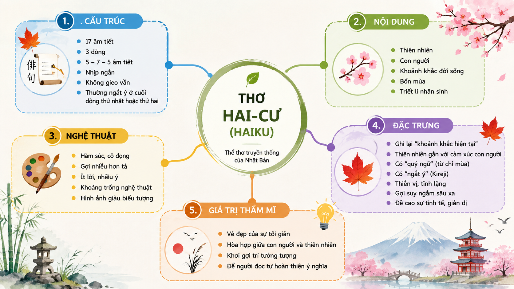
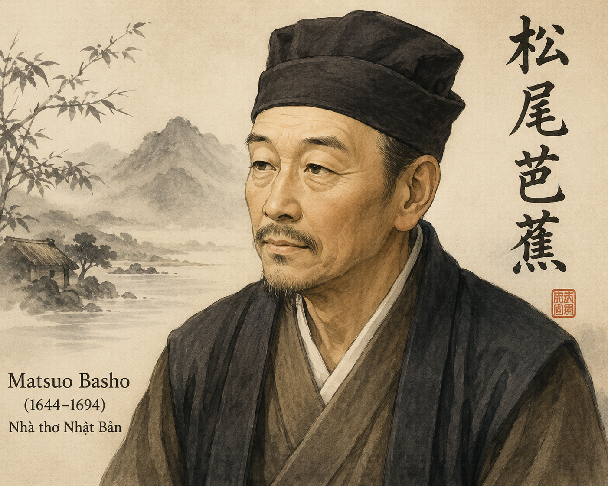
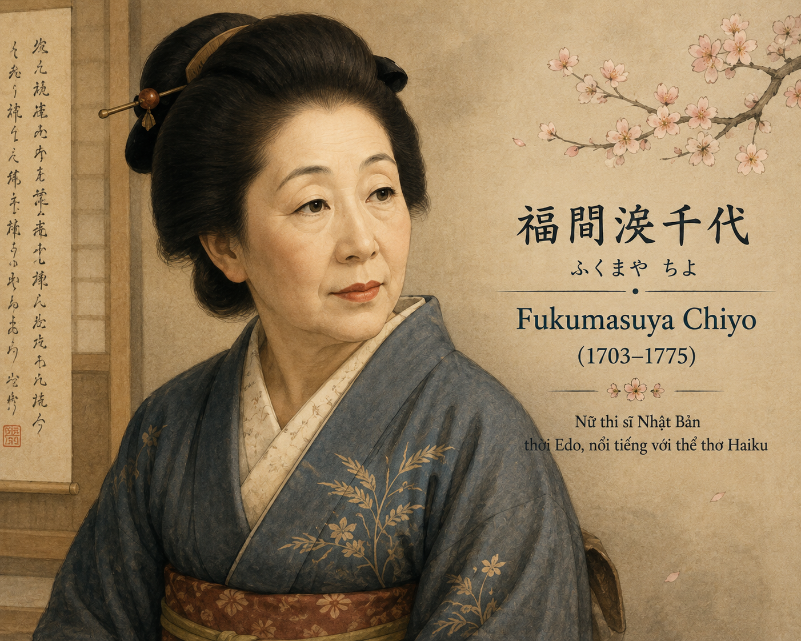
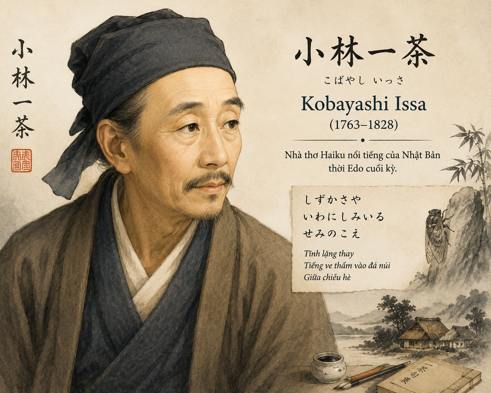

"Bài thơ ngắn nhất mà bạn đã từng đọc là bài nào? Điều gì khiến nó được bạn nhớ tới?"
Khái niệm: Hai-cư là thể thơ truyền thống có vị trí quan trọng trong văn học Nhật Bản, đồng thời được xem là một trong những hình thức cô đọng nhất của thơ ca thế giới.
Cấu trúc chuẩn tiếng Nhật: Bài thơ chỉ gồm 3 dòng với quy tắc ngắt nhịp âm tiết nghiêm ngặt: dòng 1 có \(5\) âm tiết, dòng 2 có \(7\) âm tiết, dòng 3 có \(5\) âm tiết (Tổng cộng \(17\) âm tiết).
Đặc điểm thẩm mỹ:

Hình 1: Sơ đồ cấu trúc và đặc trưng của thể thơ Hai-cư (h1.png)

h2.png (Tác giả Ba-sô)(Matsuo Basho, 1644-1694)
Là nhà thơ nổi tiếng của văn học Nhật Bản. Ông có công lớn trong việc hoàn thiện thơ hai-cư, đưa nó trở thành thể thơ độc đáo nhất của Nhật Bản.

h3.png (Tác giả Chi-y-ô)(Fukumasuya Chiyo, 1703-1775)
Người đánh dấu sự hiện diện của các tác giả nữ trong truyền thống thơ hai-cư. Bà tạo nên một tiếng nói thơ ca độc đáo, được nhiều người yêu thích.

h4.png (Tác giả Ít-sa)(Kobayashi Issa, 1763-1828)
Là nhà thơ kiêm tu sĩ Phật giáo, đồng thời là họa sĩ tài ba, nổi tiếng với những bức tranh có đề các bài thơ hai-cư do chính ông sáng tác.
Trên cành khô
cánh quạ đậu
chiều thu.
(Ba-sô - Basho, Nhật Chiêu dịch)
Hãy hình dung về màu sắc, không khí của khung cảnh được gợi tả trong bài thơ.
Ôi hoa triêu nhan
Dây gàu vương hoa bên giếng
Đành xin nước nhà bên.
(Chi-y-ô - Chiyo, Nhật Chiêu dịch)
Ấn tượng mà hình ảnh "hoa triêu nhan" và "dây gàu" gợi ra cho bạn là gì?
Chậm rì, chậm rì
Kìa con ốc nhỏ
Trèo núi Phu-gi.
(Ít-sa - Issa, Nhật Chiêu dịch)
Khi nhắc đến "con ốc" và "núi Phu-gi", người ta thường nghĩ đến những đặc điểm nào?
Câu 1: Hãy nhận diện hình ảnh trung tâm ở từng bài thơ hai-cư và cho biết đặc điểm chung của các hình ảnh ấy.
Hình ảnh trung tâm của từng bài thơ:
Đặc điểm chung: Đều là những hình ảnh đời thường, nhỏ bé, giản dị của thiên nhiên và vạn vật quanh ta; mang vẻ đẹp tự nhiên, không tô vẽ cầu kỳ.
Câu 2: Xác định mối quan hệ giữa hình ảnh trung tâm trong bài thơ của Ba-sô với các yếu tố thời gian và không gian.
Mối quan hệ giữa hình ảnh, thời gian và không gian:
- Hình ảnh trung tâm: Cánh quạ đen đậu trên cành cây khô trơ trọi.
- Không gian & Thời gian: Chiều thu lạnh lẽo, mênh mông, tĩnh lặng.
- Tương quan: Điểm xuyết bóng dáng đen đúa, đơn độc của con quạ trên nền cành khô làm nổi bật sự ngưng đọng của thời gian và cái mênh mông, tịch mịch của không gian mùa thu.
Câu 3: Bài thơ của Chi-y-ô được triển khai xoay quanh phát hiện nào? Theo bạn, vì sao phát hiện này lại dẫn dắt nhân vật trữ tình sang "xin nước nhà bên"?
- Phát hiện bừng ngộ: Hoa triêu nhan nở sớm, quấn quýt và leo vương trên dây gàu múc nước giếng.
- Lý do sang "xin nước nhà bên": Nhân vật trữ tình nhận ra sự sống tươi trẻ, vẻ đẹp mỏng manh của bông hoa. Vì không muốn làm đứt dây hoa hay ảnh hưởng tới vẻ đẹp tự nhiên ấy, nữ sĩ đành chấp nhận bất tiện, bước sang nhà bên xin nước. Qua đó thể hiện sự trân trọng, nâng niu sinh linh thiên nhiên.
Câu 4: Từ những đặc điểm thường được liên hệ khi hình dung về "con ốc" và "núi Phu-gi", hãy nhận xét về tương quan giữa hai hình ảnh này.
- Tương quan tương phản tuyệt đối: "Con ốc" (nhỏ bé, chậm chạp, mỏng manh) đối lập hoàn toàn với "Núi Phu-gi" (ngọn núi cao nhất Nhật Bản 3776m, sừng sững, vĩ đại).
- Ý nghĩa: Sự tương phản tôn lên tư thế kiên cường, nỗ lực phi thường của con ốc nhỏ. Mọi hành trình vĩ đại đều bắt đầu từ những bước đi "chậm rì, chậm rì" đầy nghị lực.
Câu 5: Khoảnh khắc được thể hiện trong bài thơ của Ba-sô có thể khơi gợi những cảm xúc gì ở người đọc?
- Cảm giác về sự tĩnh lặng tuyệt đối, ngưng đọng của thời gian.
- Rung động trước vẻ đẹp u trầm, thanh bình, giúp tâm hồn người đọc chậm lại, suy ngẫm về sự ngắn ngủi và vô thường của kiếp người trong vũ trụ rộng lớn.
Câu 6: Từ bài thơ của Chi-y-ô, hãy bình luận về ý nghĩa triết lý trong cách ứng xử của con người đối với thiên nhiên mà bài thơ gợi ra.
- Triết lý ứng xử: Con người không làm chủ hay nhượng bộ tàn phá thiên nhiên vì sự tiện lợi của cá nhân. Thay vào đó, con người nhường bước, nhẫn nại, sống hòa hợp và tôn trọng từng sinh linh nhỏ bé của tự nhiên.
Câu 7: Bạn cảm nhận như thế nào về hành trình "chậm rì" của con ốc trong bài thơ của Ít-sa?
- Hành trình đó không hề tuyệt vọng hay hoang đường mà thể hiện ý chí bền bỉ, niềm lạc quan và sự kiên trì theo đuổi mục tiêu dù đường đi còn xa và đầy thử thách.
Nhiệm vụ: Từ việc đọc ba bài thơ trong chùm thơ hai-cư, hãy viết đoạn văn (khoảng 150 chữ) trình bày về điều bạn cảm thấy thú vị nhất ở thể thơ hai-cư.
Đoạn văn mẫu tham khảo:
"Điểm làm tôi cảm thấy thú vị nhất ở thể thơ hai-cư chính là khả năng 'kiệm lời mà gợi nhiều suy tưởng'. Với dung lượng cực kỳ ngắn gọn chỉ gồm 3 dòng thơ và vỏn vẹn 17 âm tiết, hai-cư không miêu tả dông dài hay diễn giải dồn dập. Mỗi bài thơ giống như một bức tranh chấm phá bằng mực tàu hay một khoảnh khắc 'bừng ngộ' của tâm hồn trước thiên nhiên. Chỉ bằng vài đường nét đơn sơ – một cánh quạ đậu chiều thu, bông hoa triêu nhan vướng dây gàu, hay con ốc nhỏ trèo núi Phú Sĩ – bài thơ đã mở ra cả một khoảng không gian mênh mông cùng những triết lý nhân sinh sâu sắc về tình yêu thương vạn vật và sự kiên trì. Thơ hai-cư chính là nghệ thuật chắt lọc đỉnh cao, dạy con người biết lắng nghe những điều bình dị nhất."
Trong thơ hai-cư truyền thống Nhật Bản luôn chứa đựng một "Quý ngữ" (Kigo) – tức là từ ngữ chỉ mùa (xuân, hạ, thu, đông). Ví dụ: "chiều thu" (bài 1), "hoa triêu nhan" (loài hoa nở mùa hè/thu ở bài 2). Quý ngữ giúp kết nối tâm hồn tác giả trực tiếp với nhịp đập thiên nhiên.
Tự mình sáng tác một bài thơ hai-cư bằng tiếng Việt theo cấu trúc 3 dòng! Hãy bắt đầu bằng việc quan sát một khoảnh khắc nhỏ quanh em: hạt sương trên lá, tiếng ve gọi hè, hay ánh nắng ban mai rọi qua cửa sổ.
Khi dịch thơ hai-cư sang tiếng Việt, do sự khác biệt về loại hình ngôn ngữ, số lượng âm tiết của bản dịch có thể không tuyệt đối tuân thủ quy tắc 5-7-5. Tuy nhiên, yếu tố cô đọng và tính chất gợi mở bừng ngộ vẫn được bảo lưu nguyên vẹn.
Hãy vượt qua 10 câu hỏi từ dễ đến khó để trở thành Triệu Phú Tri Thức!
Câu 1 (Mức 1 - 10đ) Thơ Hai-cư là thể thơ truyền thống của quốc gia nào?
Câu 2 (Mức 2 - 20đ) Một bài thơ Hai-cư truyền thống tiếng Nhật chuẩn gồm bao nhiêu dòng và bao nhiêu âm tiết?
Câu 3 (Mức 3 - 30đ) Ai là nhà thơ có công lớn nhất trong việc hoàn thiện và đưa Hai-cư trở thành thể thơ độc đáo nhất Nhật Bản?
Câu 4 (Mức 4 - 40đ) Hình ảnh trung tâm trong bài thơ thứ nhất của Ba-sô là gì?
Câu 5 (Mức 5 - 50đ) Nhà thơ nữ đánh dấu sự hiện diện độc đáo của nữ giới trong truyền thống thơ Hai-cư là ai?
Câu 6 (Mức 6 - 60đ) Trong bài thơ của Chi-y-ô, hành động "đành xin nước nhà bên" thể hiện thái độ gì?
Câu 7 (Mức 7 - 70đ) Núi Phu-gi (Phú Sĩ) xuất hiện trong bài thơ của Ít-sa có chiều cao bao nhiêu mét?
Câu 8 (Mức 8 - 80đ) Sức sống và sự hấp dẫn cốt lõi của thơ Hai-cư nằm ở khả năng nào?
Câu 9 (Mức 9 - 90đ) Yếu tố nào sau đây là nguyên tắc quan trọng trong tư duy và mĩ cảm thơ Hai-cư truyền thống?
Câu 10 (Mức 10 - 100đ) Tác giả Cô-ba-y-a-si Ít-sa còn nổi tiếng với vai trò nào ngoài làm thơ?
Bài tập 1: Phân tích tính cô đọng và "bừng ngộ" trong thơ Hai-cư
Hãy chọn một trong ba bài thơ hai-cư đã học và phân tích khoảnh khắc "bừng ngộ" mà tác giả nhận ra. Từ đó, chứng minh rằng bài thơ đạt đến đỉnh cao của việc "kiệm lời mà gợi nhiều suy tưởng".
Gợi ý đáp án (Phân tích bài thơ của Chi-y-ô): Khoảnh khắc "bừng ngộ" diễn ra khi tác giả ra giếng múc nước và bất ngờ nhận ra vẻ đẹp tươi nguyên của hoa triêu nhan đang quấn quanh dây gàu. Thay vì kéo dây gàu làm nát hoa, nhà thơ dừng lại, cảm nhận sự sống thiêng liêng của tự nhiên và chọn cách sang nhà bên xin nước. Bài thơ đạt đỉnh cao kiệm lời (chỉ 3 dòng) nhưng gợi mở bài học triết lý lớn về ứng xử nhân văn đối với vạn vật.
Bài tập 2: So sánh cảm hứng thẩm mỹ giữa thơ Hai-cư Nhật Bản và thơ Đường luật Trung Quốc
Chỉ ra sự giống và khác nhau căn bản về dung lượng, bút pháp gợi mở và cách thể hiện cái tôi trữ tình giữa thể thơ Hai-cư và thể thơ Tứ tuyệt / Thất ngôn bát cú Đường luật.
Giống nhau: Đều là các thể thơ truyền thống Á Đông, giàu tính khơi gợi, thiên về "ý tại ngôn ngoại", lấy thiên nhiên làm nền tảng bộc lộ cảm xúc.
Khác nhau:
- Hai-cư: Rất ngắn (17 âm tiết), không gò bó về luật vần bằng trắc khắt khe, ẩn giấu triết lý Thiền tông, cái tôi hòa lẫn hoàn toàn vào thiên nhiên.
- Đường luật: Có quy tắc niêm luật, đối, vần cực kỳ nghiêm ngặt, dung lượng cố định (28 hoặc 56 chữ), bài thơ thường bộc lộ chí hướng hoặc hoài niệm lịch sử rõ ràng hơn.
Bài tập 3: Thực hành sáng tác thơ Hai-cư bằng tiếng Việt
Hãy chọn một hình ảnh mùa trong tự nhiên (ví dụ: giọt sương, chiếc lá rơi, tiếng ve, hoa mai) và viết một bài thơ hai-cư 3 dòng ngắn gọn thể hiện khoảnh khắc rung cảm của bạn.
Bài thơ tham khảo:
Giọt sương mai đọng
Lá mầm khẽ vươn vai
Nắng bình minh tới.